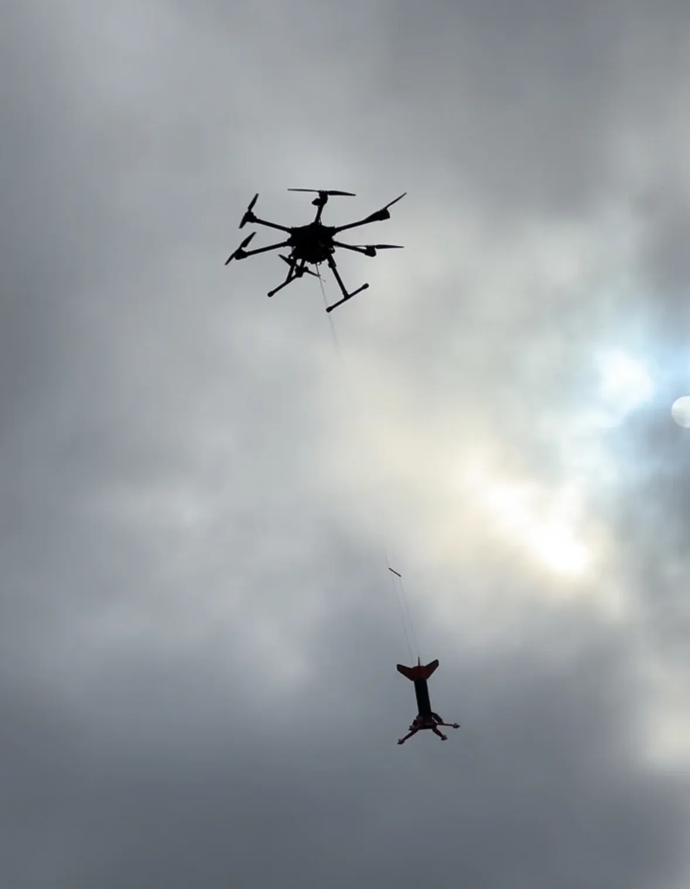
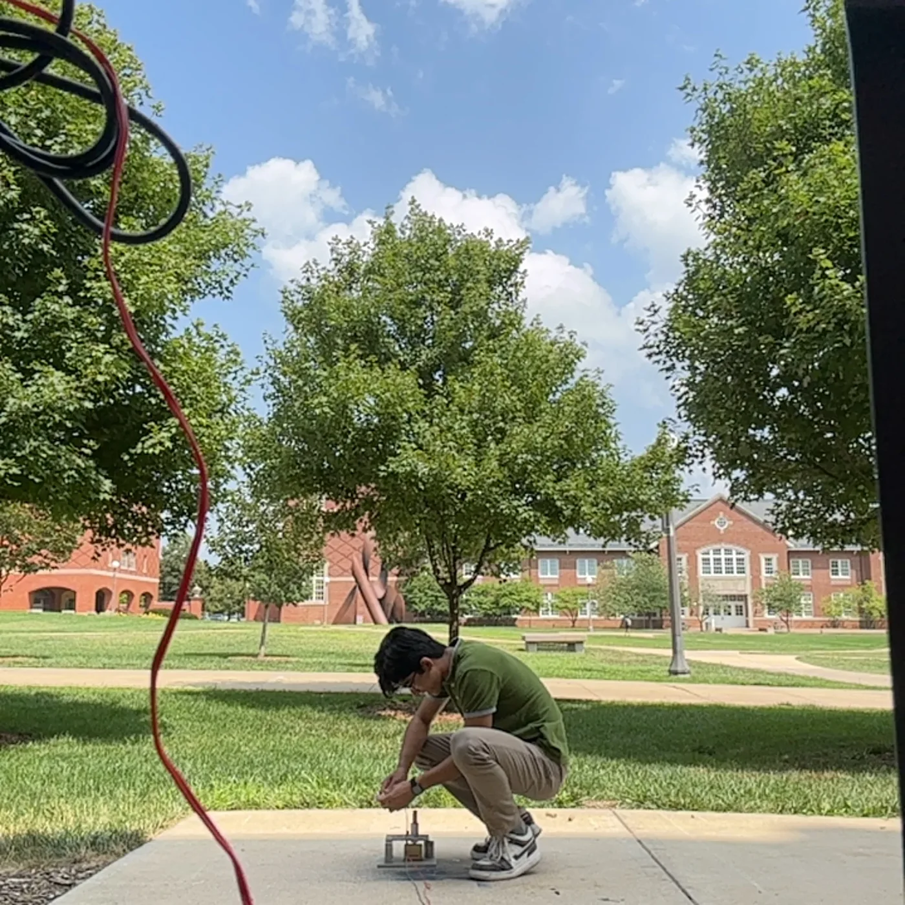

Field robotics & aerospace
Engineering for the unexplored.
I’m Kulvir Chavda, a robotics master’s student at Carnegie Mellon. I work with Prof. Matt Travers on how robots could explore an unfamiliar coastline.

Rocket lander flight test Illinois · 2023
About me
From Illinois to Pittsburgh.
At Illinois, I used data from 24 model rocket flights to test how closely I could predict a rocket’s trajectory. That work became my first paper, which I presented at the AIAA student conference in Akron.
Along the way I taught rocketry workshops, led student engineering teams, and earned my private pilot license to fly planes. Now I’m in Pittsburgh studying field robotics, with an eye toward space exploration.
My background